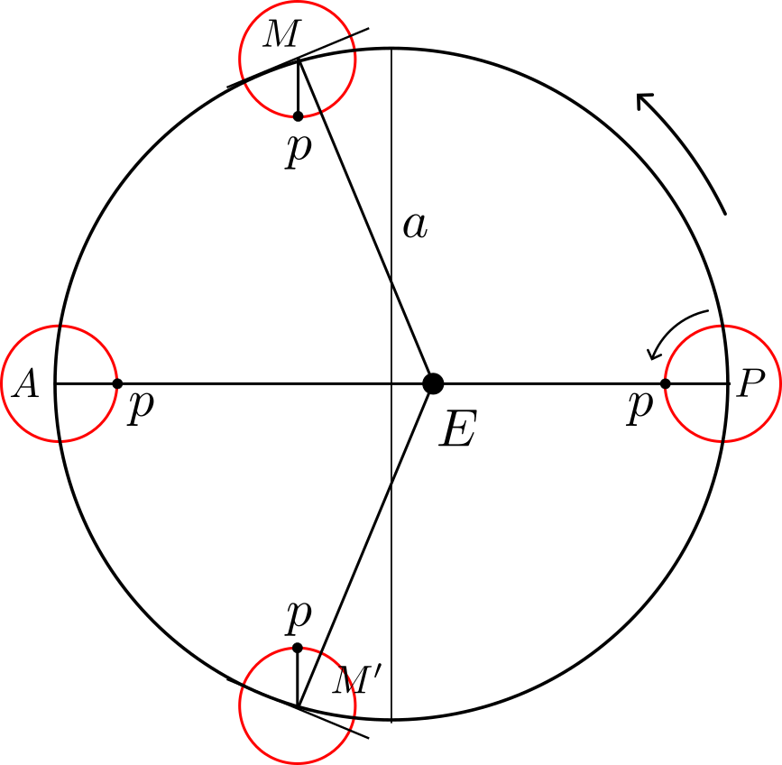

আকাশে যখনই পূর্ণিমার চাঁদ দেখা হয়না কেন আমরা হয়ত কমবেশি একইরকম চাঁদ দেখি মনে হয়। সাধারণ মানুষের চোখে কোনো পরিবর্তন ধরা পরে না আবার কেউ তা নিয়ে হয়ত এভাবে ভাবেও না। কিন্তু কেউ যদি হঠাৎ ভাবে, অনেকগুলো পূর্ণিমার চাঁদের পর পর ছবি মিলিয়ে দেখি, তাহলে সে খেয়াল করবে, আরে! চাঁদের ভিতরের অংশগুলো প্রায় একই থাকলেও কিছুটা সময়ের সাথে পরিবর্তন করছে যা পর্যায়ক্রমিক। একটা বিষয় আরো পরিষ্কার হবে যে তাদের পৃষ্ঠের একটি দিকই কমবেশি আমরা দেখতে পাই। সতেরো শতকের দিকের মানুষও ঠিক এভাবেই চাঁদের পৃষ্ঠকে ম্যাপ করা শুরু করেছিল যার ফলে সেলেনোগ্রাফির (selenography) উদ্ভব হয়।
পৃথিবীর চারিদিকে চাঁদের আবর্তন এবং নোডাল রেখার অয়নচলনের (precession) সাথে চাঁদের আবার নিজের আহ্নিক গতিও আছে যা পৃথিবীকে আবর্তনের সময়ের প্রায় সমান। ফলে চাঁদ পৃথিবীর দিকের মুখের একটা দিকই সারাক্ষণ ফিরিয়ে রেখে তাকে পাক দেয়। এই অবস্থাকে বলে Tidally Locked। এভাবে আমাদের মনে হতে পারে পৃথিবী থেকে আমরা চন্দ্রপৃষ্ঠের মাত্র \(50\%\) দেখতে পারি। কিন্তু আমরা যে ছবি তোলার একটা পরীক্ষার কথা বলেছিলাম সেখানে খেয়াল করলে মনে হবে-- নাহ,আরেকটু বেশি দেখা যাচ্ছে। কেন এমনটা হয়?
এর জন্য দায়ী লিব্রেশন (Libration) নামে এক প্রভাব! এই ঘটনা ঘটার অন্যতম কারণ হচ্ছে তাদের কক্ষপথ আসলে উপবৃত্তাকার এবং চাঁদের ক্ষেত্রে \(\omega_{\rm axial}\neq \omega_{\rm orb}\)। দিকের ওপর নির্ভর করে চাঁদের এই বিশেষ গতিকে আবার বিভিন্ন ভাবে বিভাজন করা হয়েছে--
Libration of Longitude

পোলিশ জ্যোতির্বিদ Johannes Hevelius চাঁদের সেলেনোগ্রাফিক ম্যাপ বানানো কাজে ব্যস্ত ছিলেন প্রায় ৪ বছর। অবশেষে ১৬৪৮ সালে তিনি চাঁদের দ্রাঘিমা বরাবর লিব্রেশনের পর্যবেক্ষণ করেন আর তার বইয়ে লিখে যান চাঁদও দোলন আছে, ফলে তাকে চন্দ্রীয় টপোগ্রাফির জনক বলা হয়। যদিও চাঁদের নিজের আহ্নিক গতি প্রায় সুষম উপবৃত্তাকার কক্ষপথে থাকাই তার কাক্ষীয় বেগ পরিবর্তনশীল। তাই কেপলারের গতিসূত্র অনুযায়ী চাঁদ যখন অনুভূর কাছাকাছি থাকে তখন তার কৌণিক গতি বেড়ে যায়। দেখা যায় যে অনুভূ আর অপভূর মাঝে চাঁদ প্রায় \(6^\circ\) বেশি ভ্রমণ করে ফেলে যেখানে সমগতিতে ঘূর্ণায়মান হলে ঠিক মাঝে থাকার কথা ছিল। তাহলে যদি চাঁদের ওপর কোনো বিন্দু অনভূ অবস্থানের সময়ে পৃথিবীর দিকে তাক করা থাকে সেই বিন্দু কক্ষপথের সেই মধ্যবিন্দু তে পৃথিবীর সেই একই দিকে তাক করে থাকবে না যা আমরা চিত্র স্পষ্ট দেখতে পাই। অনুভূ থেকে প্রায় ১/৪ মাস পার হবার পরে অপভূর কাছাকাছি চাঁদ যদি \(M\) অবস্থানে থাকে চাঁদের ওপরে একটা বিন্দু \(p\) মাত্র এক-চতুর্থাংশ ঘুরবে যা \(ME\) বরাবর রেখার দিকে অবশ্যই না। এজন্যই আমরা তখন চাঁদের পশ্চিমাংশের অতিরিক্ত কিছু পৃষ্ঠ দেখতে পাব। একই ঘটনা কক্ষপথের অপর দিকে অপভূ থেকে অনুভূ যাবার পথেও ঘটবে, অতএব এবার আমরা পৃথিবী থেকে চাঁদের পূর্বদিকের অতিরিক্ত অংশ অবলোকন করব।
সুতরাং এটা পরিষ্কার যে অনুভূ এবং অপভূ অবস্থানে চাঁদের লিব্রেশন শূন্য। প্রশ্ন হচ্ছে এই লিব্রেশনের মান কত? ডায়াগ্রাম থেকে বুঝা যাচ্ছে, সর্বোচ্চ লিব্রেশন কোণ \(\phi_L=\angle EMp\) হয় যখন চাঁদ \(M\) অবস্থানে থাকে এবং উৎকেন্দ্রিকতা [\(e\) এর মান 0.044 থেকে 0.064 এর মাঝে পরিবর্তিত হয়।] \(e=0.064\) ধরে, \[\sin\frac{\phi_L}{2}=\frac{c}{a}=e\Rightarrow \phi_L=2\arcsin(0.064)=7.34^\circ=7^\circ 20'\] কড়া জ্যোতির্বিজ্ঞানের ভাষায় বলা হবে \(\phi_L\) চাঁদের যেকোনো সময়ে Mean anomaly এবং true anomaly মধ্যে পার্থক্য। আমরা প্রমাণ দেখলাম যে এই কক্ষপথে আবর্তনের ফলে চাঁদ সবসময় পৃথিবীর দিকে কেবল একটি মুখই ফিরিয়ে রাখছে তা ঠিক নয়। একটি নির্দিষ্ট সময় ধরে সে তার কক্ষপথের আরেক ফোকাসের দিকে মুখ করে থাকছে। তাই বলা যায়, সে যেন দাঁড়িপাল্লার মতো তার মধ্যাবস্থানের দুপাশে দুলছে। এ থেকেই জ্যোতির্বিদরা এই পরিভাষাটি বের করেছেন libration , যার উৎপত্তি ল্যাটিন শব্দ থেকে যার মানে তুলাদণ্ড। এই ধরণের লিব্রেশনের পর্যায়কালকে বলে anomalistic month, \(T_A=27^d13^h18.6^m\) যা চাঁদের একবার অনুভূ অবস্থান থেকে আরেকবার সেখানে ফিরে আসার ব্যপ্তি।
Libration of Latitude
চাঁদের আহ্নিক গতির মেরু (উত্তর-দক্ষিণ N--S) এবং চাঁদের কক্ষপথের তলের মধ্যে পার্থক্য প্রায় \(6^\circ41'\) যার কারণে অক্ষাংশ বরাবর চাঁদের আরেক লিব্রেশন দেখা যায় যাকে বলে অক্ষাংশিক লিব্রেশন তাই আমরা চাঁদকে কখনও অল্প উত্তর থেকে দেখি কখনও অল্প দক্ষিণ থেকে। এই গতির পর্যায়কাল হচ্ছে ড্র্যাকোনিক মাসের সমান। বিস্তারিত নিচে দেওয়া আছে।
যেহেতু দুই তলের মধ্যে দশা পার্থক্যই এই লিব্রেশনের সর্বোচ্চ মান তাই, \(\phi_B=6^\circ41'\)। শেষ যে লিব্রেশন পৃথিবী থেকে দেখা যায় সেটার জন্য আসলে চাঁদ দায়ী না বরং পৃথিবীতে অবস্থিত পর্যবেক্ষক দায়ী। চাঁদকে তো আমরা পৃথিবীর কেন্দ্র থেকে পর্যবেক্ষণ করছি না করছি পৃথিবী পৃষ্ঠ থেকে তাই কিছুটা লম্বন প্রভাব দেখা যায়। আবার পৃথিবীর বিভিন্ন অবস্থান থেকে দেখলেও চাঁদের পৃষ্ঠের সামান্য কমবেশি অংশ দেখা যায়। এই বিশেষ লিব্রেশনকে বলে Diurnal Libration যার মান ১ ডিগ্রির চেয়েও কম। তাহলে শেষ প্রশ্ন আমাদের এটাই যে লিব্রেশনের কারণে আমরা চাঁদের অতিরিক্ত কত অংশ দেখতে পাচ্ছি?
একটা সহজ অ্য্যাপ্রক্সিমেশন হতে পারে,
\[(2\phi_B+2\phi_L)/180^\circ= x/50\%\Rightarrow x= 8\%\] তাহলে সম্পূর্ণ যেটা আমরা দেখতে পাই পৃথিবী থেকে \(S_{moon} \approx 50\%+8\%=58\%\)। আরেকটু বিস্তারিত পদ্ধতিতেও এটা বের করা যায় যাতে ত্রুটি কম। দুই ধরণের লিব্রেশনের প্রভাবে গড় হচ্ছে \((\phi_B+\phi_L)/2=7^\circ01'\), সুতরাং অতিরিক্ত যে ফালিটা আমরা দেখতে পাব, \(2\pi R_M \cdot 7^\circ/360^\circ\approx 213\) km প্রস্থের। এই ফালির ক্ষেত্রফল হবে প্রায়, \(213 \times 2\pi R_M =2.32\times 10^6\; \rm km^2 \), যা চাঁদের মোট ক্ষেত্রফলের ৬ শতাংশ। তাহলে এবার আমরা দেখতে পাব, \(S_{moon} \approx 50\%+6\%=56\%\)। চাঁদের অদৃশ্য পিঠের রূপ তাই মানবজাতি প্রথম দেখার সুযোগ লাভ করে ১৯৫৯ সালে সোভিয়েট মহাকাশযান লুনা-৩ এর তোলা ছবি দেখে।